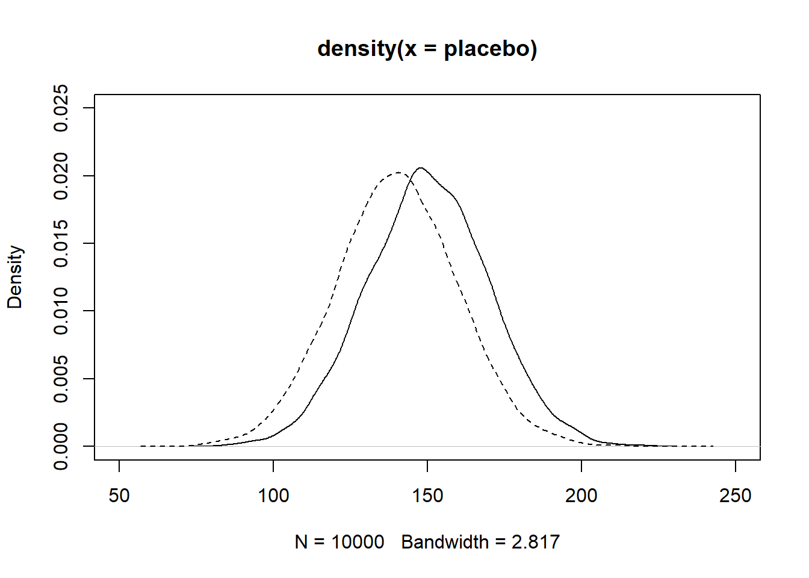
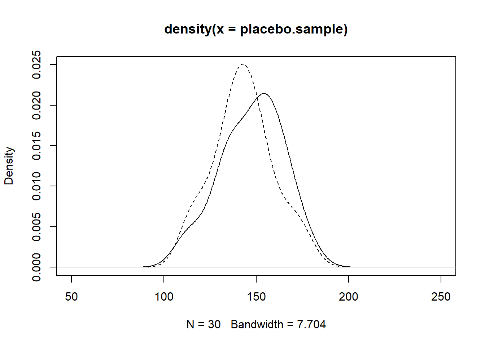
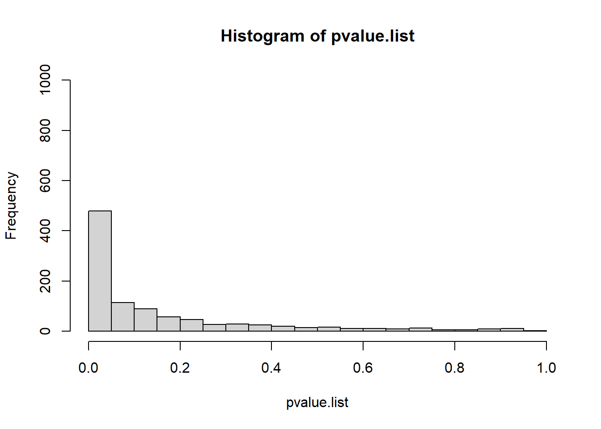
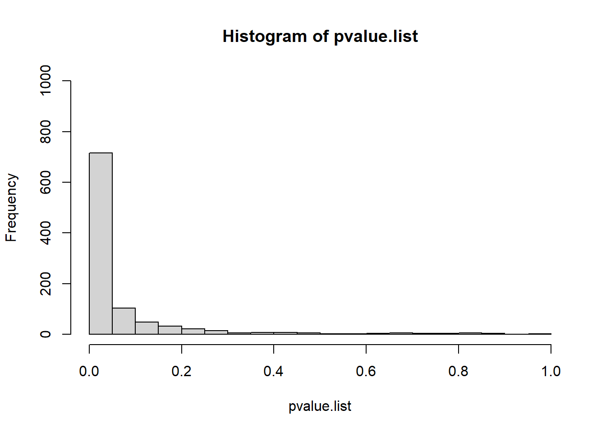
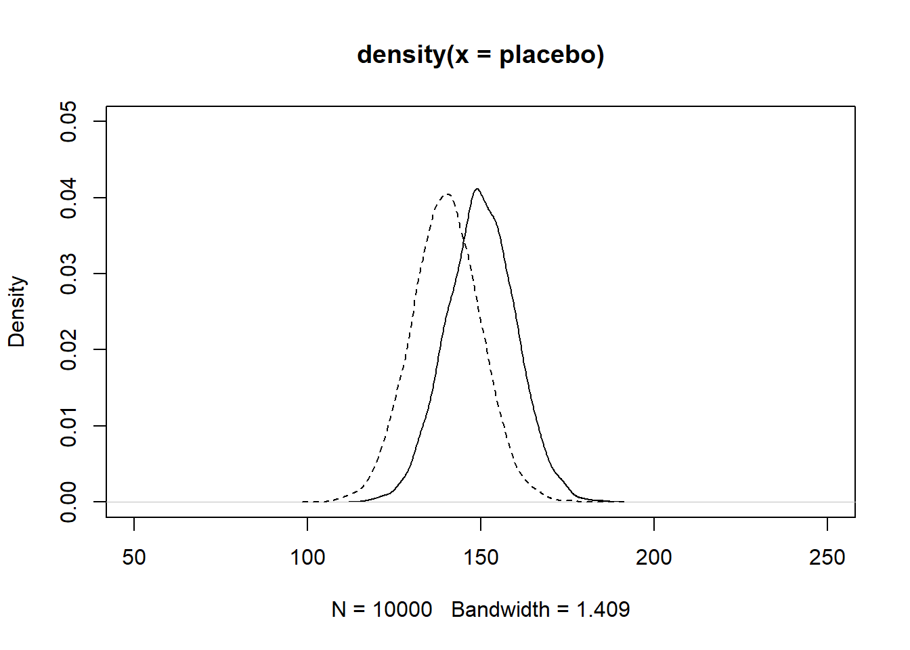
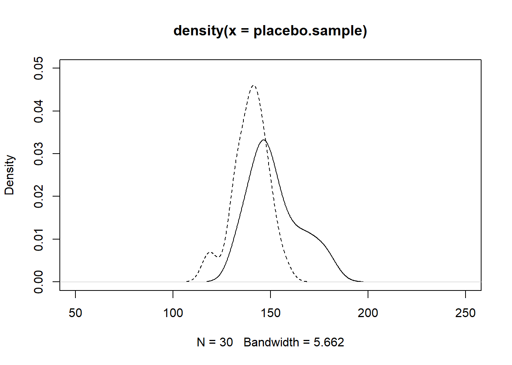
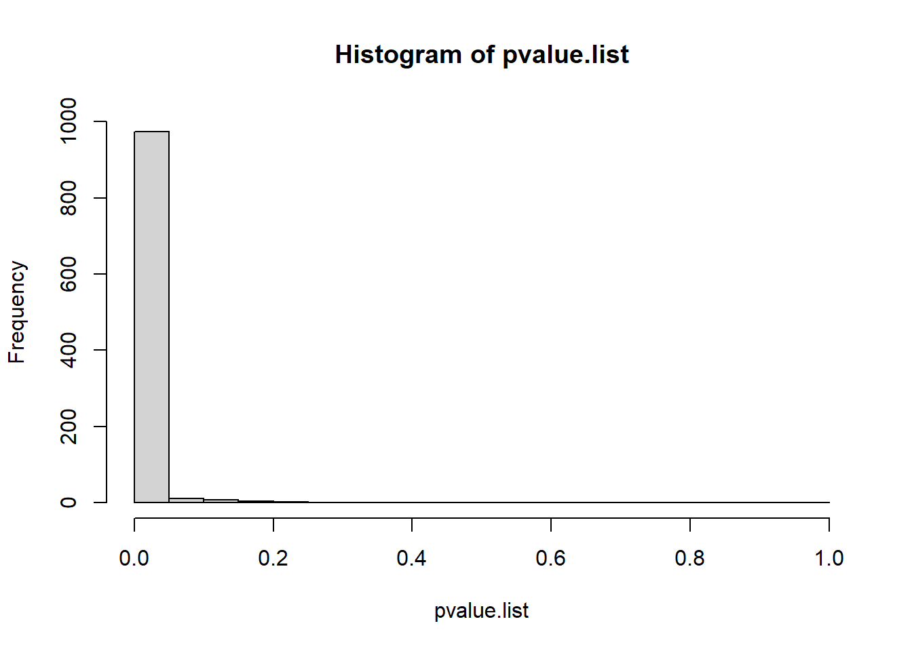

set.seed(1234)
placebo= rnorm(10000, 150, 20)
mean(placebo)[1] 150.1223sd(placebo)[1] 19.75059When you want to increase the chance of getting p < 0.05, the first thing you may think of is to increase the sample size. In this chapter, I’ll show you why increasing the sample size should be the last thing you do. Reducing unexplained variability first is more effective and requires less work than increasing sample size. Let’s see why.
We’ll start with one simulation where we increase sample size, and then do a second simulation where we reduce unexplained variability. You may be surprised at how different the results are. We are going to use the idea of power, so we’ll start with a brief explanation.
Power is the probability that you will get p < 0.05 in your experiment, assuming that the treatment has an effect. Typically, we want our experiments to have power of 80% or 90%, meaning that there is an 80% or 90% chance that we will get p < 0.05 if our assumptions about variability and effect size in our experiment are correct.
Suppose you do a power analysis and find that you only have 30% power; that is, the probability that you will get p < 0.05 is 30%. What do you do if your experiment has such low power?
Power for a t-test depends on four things:
Let’s do some simulations to illustrate how effective decreasing unexplained variability is compared to increasing sample size.
We’ll use the R software to simulate how power changes depending on the variability within treatment groups and the sample size.
We’ll simulate a clinical trial for a drug that lowers mean blood pressure by 10 units. We’ll create two populations for the simulation:
Create a population of 10,000 patients who receive a placebo. We’ll generate these to have approximately mean = 150, standard deviation = 20. Here is the R code. We use the R function set.seed() so that the results will be reproducible when you run the code.
set.seed(1234)
placebo= rnorm(10000, 150, 20)
mean(placebo)[1] 150.1223sd(placebo)[1] 19.75059Create a population of 10,000 patients who receive a drug to reduce blood pressure. We’ll generate these to have approximately mean = 140, standard deviation = 20.
set.seed(3456)
drug = rnorm(10000, 140, 20)
mean(drug)[1] 140.0547sd(drug)[1] 19.91002Plot the two populations.
plot(density(placebo), xlim= c(50, 250),ylim=c(0,.025))
lines(density(drug), lty=2)
Take samples of size n = 30 from the placebo group and the drug group.
placebo.sample = sample(placebo, size=30)
drug.sample = sample(drug, size=30)Plot the two samples.
plot(density(placebo.sample), xlim= c(50, 250),ylim=c(0, .025))
lines(density(drug.sample), lty=2)
Perform a t-test to compare the two samples.
ttest.result = t.test(placebo.sample, drug.sample, var.equal=TRUE)Notice that, in this sample, even though we know that the two populations are different (mean of 150 vs. mean of 140), the t-test gives us p = 0.2812, a non-significant result. We would conclude, incorrectly, that there is no difference between the two groups, and that the drug has no effect.
We can extract the p-value from the t-test output, so that we can pass it to other functions, which we will do shortly.
ttest.result$p.value[1] 0.2812291What happens if we repeat the process of taking a sample and doing a t-test several times? Here is code to take 4 samples, perform 4 t-tests, and output the 4 p-values.
set.seed(1234)
for (i in 1:4) {
placebo.sample = sample(placebo, size=30)
drug.sample = sample(drug, size=30)
ttest.result = t.test(placebo.sample, drug.sample, var.equal=TRUE)
print(ttest.result$p.value)
}[1] 0.02992261
[1] 0.81321
[1] 0.0461481
[1] 0.3368997Even with just these 4 samples, we have p-values ranging from 0.0299 to 0.81. The p-values are going up or down by an order of magnitude, just as a result of taking another sample from the identical population. Nothing else is changing; we are just taking another random sample.
What is the probability that we will detect a significant difference (p < 0.05) if we take many samples of size n=30? To answer this question, we’ll do a simulation of 1000 samples and t-tests, and look at the distribution of p-values.
set.seed(12345)
n = 30
n.simulations = 1000
pvalue.list = numeric(n.simulations)
for (i in 1:n.simulations)
{
placebo.sample = sample(placebo, size=n)
drug.sample = sample(drug, size=n)
pvalue.list[i] = t.test(placebo.sample, drug.sample, var.equal=TRUE)$p.value
}Here is a plot of the 1000 p-values we get from taking 1000 random samples (stored in the variable pvalue.list).
hist(pvalue.list, xlim= c(0, 1), breaks=seq(0,1,.05), ylim=c(0,1000))
What percent of the 1000 simulated samples give a p-value less than 0.05? From the graph we see that about 500 out of 1000 simulated samples give p < 0.05. So, the probability that our experiment will give us a significant result is 500/1000, or 50%. The simulation indicates that we have about 50% power.
If we increase sample size, we increase power. What is the probability that we will detect a significant difference (p < 0.05) if we increase the sample size to n=50? Do a simulation of 1000 samples and t-tests and look at the distribution of p-values.
set.seed(12345)
n = 50
pvalue.list = c()
for (i in 1:1000)
{
placebo.sample = sample(placebo, size=n)
drug.sample = sample(drug, size=n)
pvalue.list[i] = t.test(placebo.sample, drug.sample, var.equal=TRUE)$p.value
}Plot the pvalue.list.
hist(pvalue.list, xlim= c(0, 1), breaks=seq(0,1,.05), ylim=c(0,1000))
What percent of the 1000 simulated samples give a p-value less than 0.05? From the graph, approximately 700 out of 1000 simulated samples give p < 0.05. So, the probability that our experiment will give us a significant result is 700/1000, or 70%. The simulation indicates that we have 70% power. Even after a fairly big increase in sample size we still have unsatisfactory power.
If we decrease the unexplained variance, we increase power. Suppose that we know that other factors affect our response variable. For example, age, sex, medical history, and baseline disease severity may all affect the response variable, regardless of treatment. We may know that different instruments give higher or lower values, so we can control for those differences. A good strategy to reduce the unexplained variance is to include variables that affect the response in a multiple regression or ANOVA model. Here’s a simulation.
Create a population of 10,000 patients who receive a placebo. We’ll generate these to have approximately mean = 150, standard deviation = 10.
set.seed(1234)
placebo= rnorm(10000, 150, 10)
mean(placebo)[1] 150.0612sd(placebo)[1] 9.875294Create a population of 10,000 patients who receive a drug to reduce blood pressure. We’ll generate these to have approximately mean = 140, standard deviation = 10.
set.seed(3456)
drug = rnorm(10000, 140, 10)
mean(drug)[1] 140.0273sd(drug)[1] 9.95501Plot the two populations.
plot(density(placebo), xlim= c(50, 250), ylim=c(0, .05))
lines(density(drug), lty=2)
Take sample of size n = 30 from each group.
set.seed(4321)
placebo.sample = sample(placebo, size=30)
drug.sample = sample(drug, size=30)Plot the two samples.
plot(density(placebo.sample), xlim= c(50, 250),ylim=c(0, .05))
lines(density(drug.sample), lty=2)
Perform a t-test to compare the two samples.
t.test(placebo.sample, drug.sample, var.equal=TRUE)
Two Sample t-test
data: placebo.sample and drug.sample
t = 4.2261, df = 58, p-value = 8.519e-05
alternative hypothesis: true difference in means is not equal to 0
95 percent confidence interval:
6.399623 17.917451
sample estimates:
mean of x mean of y
151.9098 139.7513 After reducing the variability within group we get a good p-value, p = 0.000085, for this sample.
What is the probability that we will detect a significant difference (p < 0.05) if we take many samples of size n=30, with this reduced variability? Do a simulation of 1000 samples and t-tests and look at the distribution of p-values.
set.seed(4321)
n = 30
pvalue.list = c()
for (i in 1:1000)
{
placebo.sample = sample(placebo, size=n)
drug.sample = sample(drug, size=n)
pvalue.list[i] = t.test(placebo.sample, drug.sample, var.equal=TRUE)$p.value
}Plot the pvalue.list.
hist(pvalue.list, xlim= c(0, 1), breaks=seq(0,1,.05), ylim=c(0,1000))
What percent of the 1000 simulated samples give a p-value less than 0.05?
sum(pvalue.list < 0.05)/1000[1] 0.974We see that 974 out of 1000 simulated samples give p < 0.05. So, the probability that our experiment will give us a significant result is 974/1000, or 97.4%. The simulation indicates that we have 97.4% power.
Which would you prefer to do: increase the sample size (spending more time and money), or decrease the unexplained variance by controlling for other variables that affect the response?
The effect size for a t-test can be defined as the difference between the means of the two groups.
The standardized effect size for a t-test is the difference between the means of the two groups divided by the within-group standard deviation.
Some statisticians use the term “effect size” to mean the “standardized effect size”.